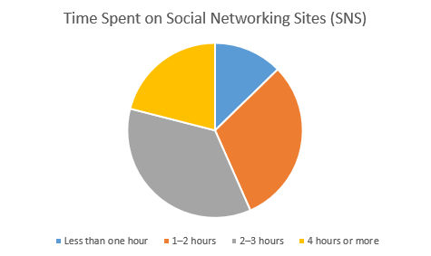
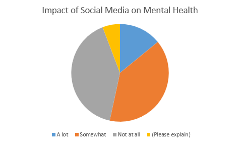
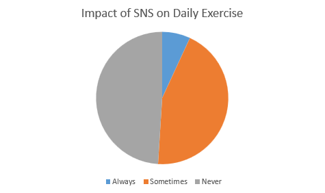
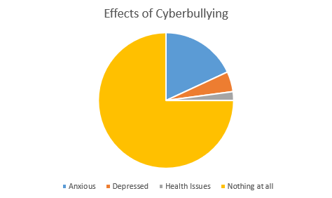
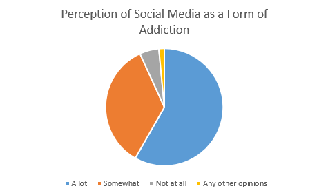
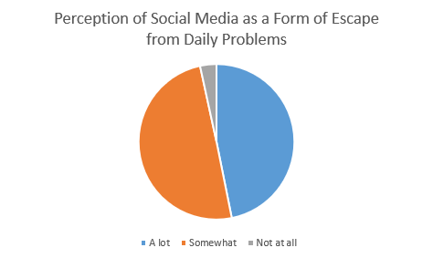

Interactive visualizations exploring the correlation between social media usage patterns and various helath indicators among college students.
|  |  |  |
|  |  |  |
Nearly two-thirds of students (about 65%) spend between 1–3 hours per day on social media, and over 20% log 4 or more hours daily. Fewer than 15% report under one hour. This shows that social platforms occupy a significant slice of most students’ free time.
A combined 53% of respondents say social media has harmed their mental health at least “somewhat” (39%) or “a lot” (14%), while 47% report “not at all.” That majority highlights a clear association between time online and feelings of anxiety, disrupted sleep, or mood swings.
Nearly half of students (47%) say social media use has decreased their daily exercise, 7% “always,” 40% “sometimes”, while 53% experience no change. This suggests that for many, screen time is displacing physical activity, with potential long-term health implications.